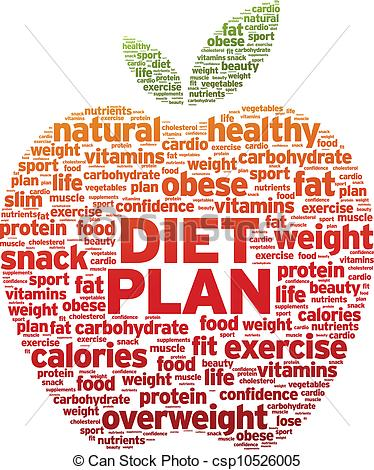
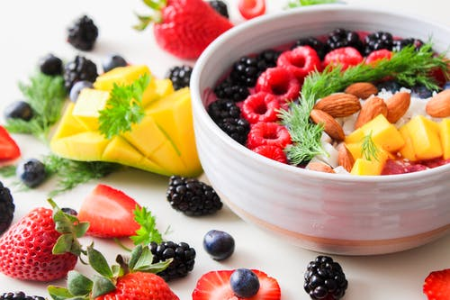
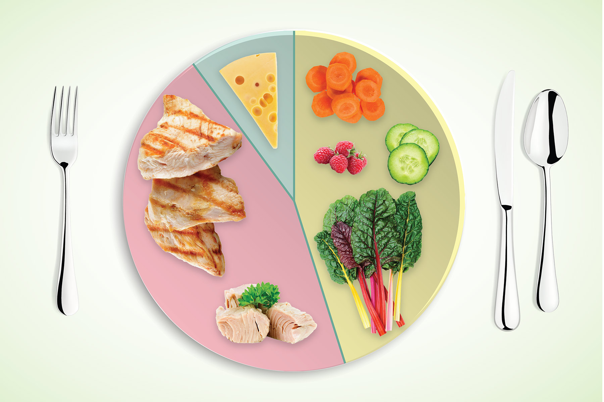

Hey Guys! This is my first post, and i wanted to help someone with it. my dad has been struggling with fatfuck syndrome, and this is the diet hes been using. Enjoy!
Your mom is starting to get more overwheight than an elephant.
This diet will help her to at least be back to 1000kg
Your mother has been eating too much lately. We both know she's enourmosly overwheight, even though u keep trying to convince yourself she is not uglier than a sewer rat.
Together, we can stop this!!!
Monday
Breakfast:
1/2 cup egg whites scrambled with 1 teaspoon olive oil, 1 teaspoon chopped basil, 1 teaspoon grated Parmesan, and 1/2 cup cherry tomatoes
1 slice whole-grain toast
1/2 cup blueberries
1 cup skim milk
Snack:
1/2 cup fat-free Greek yogurt topped with 1/4 cup sliced strawberries
Lunch:
Salad made with: 3/4 cup cooked bulgur, 4 ounces chopped grilled chicken breast, 1 tablespoon shredded low-fat cheddar, diced grilled veggies (2 tablespoons onion, 1/4 cup diced zucchini, 1/2 cup bell pepper), 1 teaspoon chopped cilantro, and 1 tablespoon low-fat vinaigrette (check out these other Buddha bowl recipes too.)
Snack:
2 tablespoons hummus and 6 baby carrots
Dinner:
4 ounces grilled salmon
1 cup wild rice with 1 tablespoon slivered toasted almonds,
1 cup wilted baby spinach with 1 teaspoon each olive oil, balsamic vinegar, and grated Parmesan,
1/2 cup diced cantaloupe topped with
1/2 cup all-fruit raspberry sorbet and 1 teaspoon chopped walnuts
.jpg)
Tuesday
Breakfast:
3/4 cup steel-cut or old-fashioned oatmeal prepared with water; stir in 1/2 cup skim milk
2 links country-style turkey sausage
1 cup blueberries
Snack:
1/2 cup fat-free ricotta cheese with 1/2 cup raspberries and 1 tablespoon chopped pecans
Snack:
1/2 cup fat-free cottage cheese with 1/2 cup salsa
Dinner:
1 turkey burger,
3/4 cup roasted cauliflower and broccoli florets,
3/4 cup brown rice,
1 cup spinach salad with 1 tablespoon light balsamic vinaigrette
Wednesday
Breakfast:
Omelet made with 4 egg whites and 1 whole egg, 1/4 cup chopped broccoli, 2 tablespoons each fat-free refried beans, diced onion, diced mushrooms, and salsa
Quesadilla made with 1/2 of one small corn tortilla and 1 tablespoon low-fat jack cheese
1/2 cup diced watermelon
Snack:
1/2 cup fat-free vanilla yogurt with 1 sliced apple and 1 tablespoon chopped walnuts
Lunch:
Salad made with 2 cups chopped Romaine, 4 ounces grilled chicken, 1/2 cup chopped celery, 1/2 cup diced mushrooms, 2 tablespoons shredded low-fat cheddar, and 1 tablespoon low-fat Caesar dressing
1 medium nectarine
1 cup skim milk
Snack:
1 fat-free mozzarella string cheese stick,
1 medium orange
Dinner:
4 ounces shrimp, grilled or sauteed with 1 teaspoon olive oil and 1 teaspoon chopped garlic
1 medium artichoke, steamed
1/2 cup whole wheat couscous with 2 tablespoons diced bell pepper, 1/4 cup garbanzo beans, 1 teaspoon chopped fresh cilantro, and 1 tablespoon fat-free honey mustard dressing

Thursday
Breakfast:
1 light whole-grain English muffin with 1 tablespoon nut butter and 1 tablespoon sugar-free fruit spread,
1 wedge honeydew,
1 cup skim milk,
2 slices Canadian bacon
Snack:
Yogurt parfait made with 1 cup low-fat vanilla yogurt, 2 tablespoons sliced strawberries or raspberries, and 2 tablespoons low-fat granola
Lunch:
Wrap made with 4 ounces thinly sliced lean roast beef, 1 6-inch whole wheat tortilla, 1/4 cup shredded lettuce, 3 medium tomato slices, 1 teaspoon horseradish, and 1 teaspoon Dijon mustard
1/2 cup pinto beans or lentils with 1 teaspoon chopped basil and 1 tablespoon light Caesar dressing
Snack:
8 baked corn chips with 2 tablespoons guacamole (try one of these guac recipes)
Dinner:
4 ounces grilled halibut
1/2 cup sliced mushrooms sauteed with 1 teaspoon olive oil, 1/4 cup chopped yellow onion, and 1 cup green beans,
Salad made with 1 cup arugula, 1/2 cup halved cherry tomatoes, and 1 teaspoon balsamic vinaigrette,
1/2 cup warm unsweetened applesauce with 1/4 cup fat-free vanilla yogurt,
1 tablespoon chopped pecans and dash cinnamon
Friday
Breakfast:
Burrito made with: 1 medium whole wheat tortilla, 4 scrambled egg whites, 1 teaspoon olive oil, 1/4 cup fat-free refried black beans, 2 tablespoons salsa,
2 tablespoons grated low-fat cheddar, and 1 teaspoon fresh cilantro 1 cup mixed melon
Snack:
3 ounces sliced lean ham
1 medium apple
Lunch:
Turkey burger (or one of these veggie burgers),
Salad made with: 1 cup baby spinach, 1/4 cup halved cherry tomatoes, 1/2 cup cooked lentils, 2 teaspoons grated Parmesan, and 1 tablespoon light Russian dressing,
1 cup skim milk
Snack:
1 fat-free mozzarella string cheese stick,
1 cup red grapes
Dinner:
5 ounces grilled wild salmon,
1/2 cup brown or wild rice,
2 cups mixed baby greens with 1 tablespoon low-fat Caesar dressing,
1/2 cup all-fruit strawberry sorbet with 1 sliced pear

Saturday
Breakfast:
Frittata made with 3 large egg whites, 2 tablespoons diced bell peppers, 2 teaspoons chopped spinach, 2 tablespoons part-skim shredded mozzarella, and 2 teaspoons pesto 1/2 cup fresh raspberries,
1 small bran muffin,
1 cup skim milk
Snack:
1/2 cup low-fat vanilla yogurt with 1 tablespoon ground flaxseed and 1/2 cup diced pear
Lunch:
4 ounces sliced turkey breast,
Tomato-cucumber salad made with 5 slices tomato, 1/4 cup sliced cucumber, 1 teaspoon fresh chopped thyme, and 1 tablespoon fat-free Italian dressing,
1 medium orange
Snack:
Smoothie made with 3/4 cup skim milk, 1/2 banana, 1/2 cup low-fat yogurt, and 1/4 cup sliced strawberries
Dinner:
4 ounces red snapper baked with 1 teaspoon olive oil, 1 teaspoon lemon juice, and 1/2 teaspoon no-sodium seasoning,
1 cup spaghetti squash with 1 teaspoon olive oil and 2 teaspoon grated Parmesan cheese,
1 cup steamed green beans with 1 tablespoon slivered almonds
Sunday
Breakfast:
2 slices Canadian bacon,
1 whole-grain toaster waffle with sugar-free fruit spread,
3/4 cup berries,
1 cup skim milk
Snack:
1/4 cup fat-free cottage cheese with 1/4 cup cherries and 1 tablespoon slivered almonds
Lunch:
Salad made with: 2 cups baby spinach, 4 ounces grilled chicken, 1 tablespoon chopped dried cranberries, 3 slices avocado, 1 tablespoon slivered walnuts, and 2 tablespoons low-fat vinaigrette,
1 apple
1 cup skim milk
Snack:
1/4 cup plain fat-free Greek yogurt with 1 tablespoon sugar-free fruit spread and 1 tablespoon ground flaxseed,
1/4 cup blueberries
Dinner:
4 ounces lean pork tenderloin stir-fried with onions, garlic, broccoli, and bell pepper
1/2 cup brown rice
5 medium tomato slices with 1 teaspoon each chopped ginger, chopped cilantro, light soy sauce, and rice wine vinegar

Hope this helped, please show this to your mom so there’s food left to the starving kids in Africa!